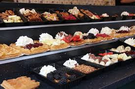

Su territorio está organizado en once provincias y conforma, junto con Suecia y Dinamarca, Escandinavia.
El idioma oficial es el noruego, en sus dos modalidades escritas: bokmål y nynorsk, una lengua norgermánica relacionada directamente con el danés y el sueco.
En su mayor parte, los habitantes de noruego y sueco pueden entenderse entre si, aunque teniendo ciertas dificultades para comprender el danés.
Noruega fue elegido en 2018 como el país más feliz del mundo teniendo en cuenta como criterios, la libertad, el bienestar, la salud y la generosidad.
De su capital, Oslo, destacan el Palacio Real, el parque Vigeland, o el Museo de Barcos Vikingos, qáue se pueden aderezar con el arte de las pinticauras de Eduard Munch
Otra ciudad de importancia turística es Trondheim, donde destacan la imponente catedral de Nidaros y las casitas a orillas del río Nidelva.
Rutas Panoramicas
El arte, el diseño y la arquitectura que rodean a algunas de las soberbias carreteras noruegas amplifican el esplendor de las maravillas naturales del país, acercándose a la naturaleza de una forma nueva y sorprendente.
Desde el remoto norte al último rincón del suroeste del país, la arquitectura y el diseño noruegos se mezclan con la naturaleza pasando a formar parte de los paisajes que se pueden admirar a lo largo de 18 carreteras.
*Mirador de Stegastein - Ruta Aurlandsfjellet
El mirador de Stegastein, situado en Aurland, uno de los fiordos más grandes de la costa oeste de Noruega, es una de las obras más conocidas y reconocibles, fue elaborada por los arquitectos Todd Saunders y Tommie Wilhelmsem, quienes buscaban un elemento que no tocara el paisaje, el resultado es una pieza que se curva hacia abajo tras una pasarela de cuatro metros de ancho y que sobresale 30 metros del borde, consiguiendo jugar con el vértigo del visitante y, por supuesto, sorprendiéndolo.
*Aurlandsfjellet - Ruta Atlanterhavsvegen
La conocida como Carretera del Atlántico o Atlantic Ocean Road (Atlanterhavsveien en Noruego) es un tramo de carretera que atraviesa un archipiélago en los municipios de Eide y Averøy, en la región de Nordmøre, en el centro-oeste de la costa Noruega.
Pese a tener solo 36 kilómetros de extensión, es uno de los tramos de carretera más espectaculares del mundo. La carretera del Atlántico cruza la boca de un fiordo y salta a través de arrecifes e islotes a lo largo de ocho puentes.
*Ruta Helgelandskysten
Ruta escénica noruega Helgelandskysten es la más larga de las 18 rutas escénicas noruegas. Los seis viajes en ferry y los contrastes que presenta la ruta significan que debe reservar mucho tiempo para el viaje.
El camino sigue la costa, pero su carácter cambia de la larga línea de picos en el norte a los fiordos y montañas hasta que el paisaje se vuelve más suave con el archipiélago y las islas en el mar. Incluso en el fértil paisaje cultivado del sur, la proximidad del mar es esencial para la experiencia.
*Mirador Gudbrandsjuvet
En un paisaje natural de excepcional belleza se instala una pasarela para visitantes que hace posible su contemplación.
La relación entre el paisaje y el visitante se da en condiciones de seguridad tanto para los visitantes como para el paraje que es visitado. Estas dos realidades se encuentran, dialogan, se reconocen, pero no se afectan ni contaminan.
El inserto se adapta y destaca asimismo con acierto en las marcadas estaciones del año. La plataforma principal está construida con láminas de acero cortadas con láser de 25mm de espesor, en voladizo como un puente a lo largo de todo el acantilado, colgado en cada extremo.
Arte y Cultura
El arte y la cultura noruegas incluyen tanto las tradiciones vikingas y las iglesias medievales de madera, como los cuadros de Edvard Munch y las obras de Henrik Ibsen, hasta llegar a los modernos diseños y la arquitectura de vanguardia de hoy en día.
* Edvard Munch
Edvard Munch se ganó un lugar en la historia con obras de arte que reflejan la influencia de su agitado espíritu y de la naturaleza noruega. Descubre al creador de la emblemática obra 'El grito'.
Aunque puede que El grito sea más conocido que su propio autor, Munch es uno de los noruegos más famosos de todos los tiempos. El pintor, que nació en Løten en 1863, estuvo en activo durante más de 60 años. Muchas de sus obras reflejan temáticas como la ansiedad, los celos, o la melancolía, motivo por el que su arte es tan relevante hoy en día como lo era hace 125 años.
*Museo Nacional
Aprende más sobre el arte noruego e internacional gracias a la colección estatal más importante de Noruega en pinturas, dibujos y esculturas que datan desde la antigüedad hasta el año 1950. A partir del año 2021, el Museo Nacional en Oslo expondrá tanto muestras temporales como una colección permanente. Algunas de las obras más destacadas que podrán visitarse serán varios de los cuadros más importantes de Edvard Munch, como por ejemplo algunas versiones icónicas del Grito y La Madonna, así como la Procesión nupcial en el fiordo de Hardanger de Tidemand y Gude y la Noche de invierno en las montañas de Harald Sohlberg. Entre las obras de arte internacional se encuentran pinturas de Pablo Picasso, Claude Monet, Auguste Renoir, Edgar Degas y Édouard Manet.
*Los Vikingos Noruegos
El ambiente vikingo tiene una fuerte presencia en Noruega, gracias a la historia vikinga y a museos, visitas guiadas, aldeas vikingas y otras experiencias en una sorprendente cantidad de lugares a lo largo de todo el país.
Los vikingos eran comerciantes, agricultores o guerreros del mar procedentes de los países nórdicos y que vivieron durante la era vikinga, entre los años 800 y 1050, aproximadamente. Participaron en expediciones e incursiones en el este y el oeste de Europa para comerciar con otros pueblos, establecerse en otros territorios, saquear y llevar nuevos productos de vuelta a casa.
*Iglesias medievales de Noruega
Las laboriosamente talladas iglesias de madera existieron en todo el noroeste de la Europa medieval. Hoy en día, se encuentran casi exclusivamente en Noruega.
Durante la Edad Media se construyeron inmensas catedrales de piedra en muchas partes de Europa. En Noruega, se usó una técnica similar para construir en madera.
Hay varios tipos de iglesias de madera, pero una cosa que tienen en común son los postes angulares (stave) y un marco de madera con tablones que se aguantan sobre soleras. Estas paredes se conocen como paredes stave, y de aquí el nombre de stavkirke.
Gastronomía
Granos y vegetales de calidad, cordero y carnes curadas, bayas silvestres y, por supuesto, los mejores pescados, son los puntos fuertes de la cocina noruega.
Muchos de estos ingredientes frescos los encuentras en la cocina noruega del día a día, y con tantos productos al alcance de la mano, no sorprende que la nueva moda sea preparar los platos desde cero. Además, productores de café locales y baristas con premios internacionales a sus espaldas han reinventado la pasión noruega por el café.

*Cordero noruego
Es especialmente tierno y jugoso, ya que la mayoría de estos animales pastan en tierras del exterior, con amplias superficies de naturaleza virgen a su alrededor, agua limpia, y vegetación rica en proteínas que incluye distintos tipos de hierbas.
El Pinnekjøtt, costillas de cordero o carnero curadas en salmuera o sal marina, es un plato típico de las navidades en la Noruega de los Fiordos.
*Quesos brie-llantes
Durante los últimos años, los queseros noruegos más prometedores han elaborado una variedad de productos mucho más amplia: desde Camembert, queso azul, queso de cabra y brie, a productos más tradicionales como gamalost and pultost. El ambiente limpio y frío del paisaje noruego proporciona el escenario perfecto para producir leche de vaca y de cabra de alta calidad.
Hoy en día encontramos más de 150 productores de queso a pequeña escala, esparcidos desde el Sur de Noruega hasta Finnmark, en el norte. Algunos de estos negocios los llevan jóvenes y ambiciosos queseros ansiosos por experimentar con técnicas, especias y maduración.

*Gofres
Esponjosos, llenos de sabor, cubiertos de una perfecta mezcla de crema agria y mermelada. O en su versión salada, con jamón y delicioso queso de cabra.
Básicamente los cinco millones de habitantes noruegos, se dividen entre los que creen que los gofres deben tener forma de corazón, y los que piensan que deben ser cuadrados. En cualquier caso, los gofres noruegos son más finos y más esponjosos que las versiones americana o belga.
Kakevaffel - Una serie de gofres superpuestos con varias capas de crema de vainilla, como si fuera una tarta.
Bålvaffel – Gofre cocinado al fuego de una hoguera.
Atractivos Naturales
Los glaciares, montañas y cascadas emanan una energía sublime y salvaje. Por otro lado, maravillas naturales como las auroras boreales, el sol de medianoche, los fiordos y la tranquilidad de los parques nacionales resaltan las cualidades serenas de Noruega.
Puedes escalarlos, maravillarte con ellos, incluso esquiar sobre ellos en pleno verano. Pero no podrás dejar de sentir el enorme poder propio de los indomables glaciares.
*Glaciar Jostedalsbreen
Situado en la provincia de Sogn og Fjordane, en la Noruega de los fiordos, el Jostedalsbreen es el mayor glaciar en Europa continental, con una superficie de 487 kilómetros cuadrados y hielo de un grosor de hasta 600 metros.
Cuenta con más de 50 ramas glaciares, por ejemplo los famosos glaciares Briksdalsbreen y Nigardsbreen. El glaciar forma parte del Parque Nacional de Jostedalsbreen, ocupando más de la mitad del parque.
*Krystall Hotel
Un enorme copo de nieve situado en medio de un fiordo junto a Tromso, una de las ciudades noruegas más visitadas del círculo polar ártico. Este será el hotel de cristal que, como si se tratase de un iceberg, se espera que tenga las mejores vistas del mundo, por el paraje natural que lo rodea, carecer de contaminación lumínica y presenciar el espectáculo de las auroras boreales. Aunque todavía no está abierto el público, la empresa encargada de su construcción, Dutch Docklands, ha publicado en su misma web que el hotel será sostenible, no perjudicará al medio ambiente y que sus instalaciones contarán con 86 habitaciones, spa y espacios recreativos.
*Cascada Vinnufallet
Con un desnivel de más de 800 metros, Vinnufallet, la cascada más alta de Noruega. Vinnufallet tiene, sin embargo, una altura total mayor y ocupa el primer lugar, según los datos de World Waterfall Database. Se encuentra en Sunndalen, en el Noroeste de los fiordos, una zona con varias cascadas de gran belleza, como las de Åmotan y Mardalsfossen.
*Reinebringen, en Lofoten
Este exigente recorrido hacia la verdadera joya de la corona de Reine, en el extremo sur de Lofoten, no es para los que sufren mal de alturas. Después de subir cientos de empinados escalones entre agrestes picos de montaña, las vistas del Vestfjord y de las pequeñas aldeas de pescadores de Reine y Hamnøy seguro que te dejarán sin palabras. Eso sí, asegúrate de hacer esta ruta con buen tiempo y no corras ningún riesgo innecesario.